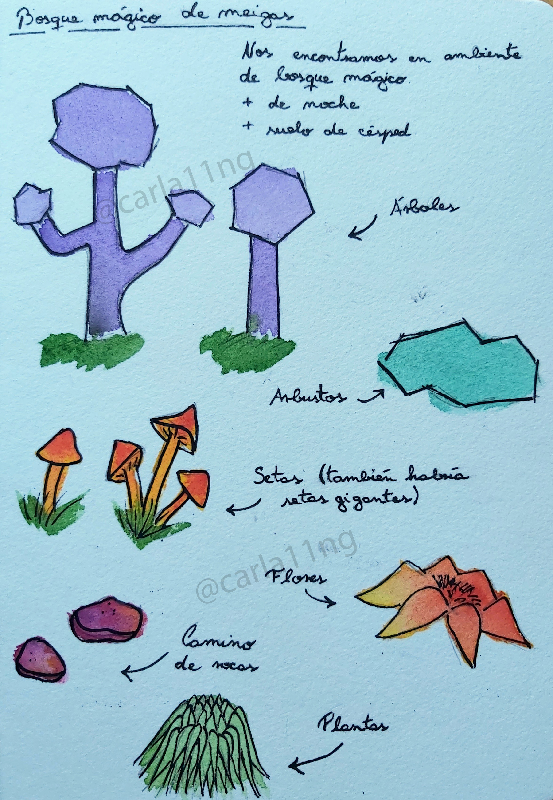
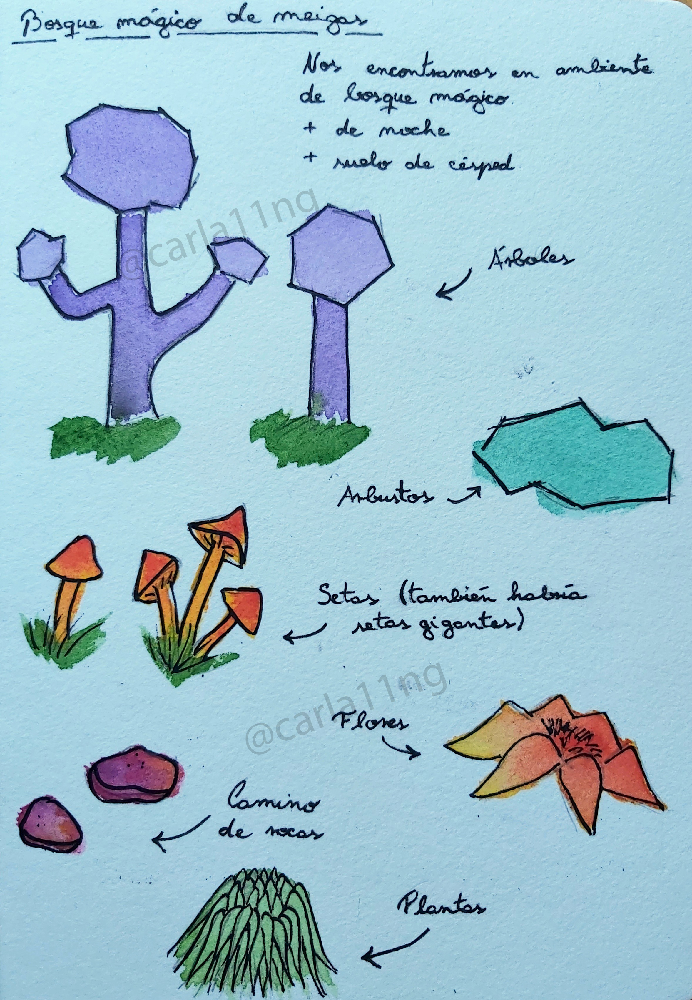

Descripción general
Bosque de Meigas trata de una joven bruja que vive en una cabaña a las afueras de un pueblo ficticio gallego (norte de España), el cual se encuentra cerca de un bosque encantado, que fue habitado por meigas en el pasado.
El bosque se considera encantado debido a que provee a algunos brujos de ingredientes para sus hechizos, incluso ingredientes que no se esperarían encontrar en un lugar así, como por ejemplo: distintos tipos de cristales, envases, sales, todo tipo de hierbas y plantas. También se dice que es donde las meigas se encontraban con los que serían luego sus familiares (gatos, búhos, perros, ranas, serpientes, …).
La misión del personaje principal es recolectar ingredientes para crear hechizos y pócimas, tanto para ella como para los habitantes del pueblo, quienes le piden ayuda y solicitan sus servicios como bruja. También se podrán realizar hechizos y rituales que harán crecer y evolucionar al personaje, para que pueda obtener nuevas habilidades y realizar nuevas actividades y tipos de hechizos.
El juego no presenta batallas ni enemigos, ya que se trata de un juego relajante y acogedor, pero nuestro personaje deberá siempre mantenerse protegida con magia, para no verse afectada por entes o energías negativas, o por un hechizo o ritual que no le haya salido del todo bien.
 
